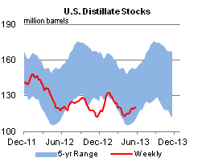

Released: May 30, 2013
Next Release: June 5, 2013
Eastern Canadian refineries are increasing their use of U.S.-sourced crude oil
Canadian refineries, like those in the United States, are working to increase their use of growing production of crude oil from Texas and North Dakota. Monthly exports of crude oil from the United States to Canada have historically averaged 24,000 barrels per day (bbl/d) and were principally delivered to refineries in central Canada. However, U.S. exports to Canada averaged nearly 100,000 bbl/d over the first 3 months of 2013 (Figure 1).
While the Midwest (PADD 2) has been the traditional delivery source for U.S. crude oil exports to Canada, the recent increase in exports is being led by deliveries from the Gulf Coast (PADD 3) and the East Coast (PADD 1). Nearly all of the PADD 3 crude exports to Canada were light crude oil. Trade press reports indicate that Suncor Energy, Irving Oil, Trafigura, and Valero are among the companies that have already shipped, or will soon ship, crude oil from the U.S. Gulf Coast to refineries in eastern Canada. PADD 1 exports were barrels that moved east from North Dakota's Bakken region by rail and then were exported through New York state.
{kind=link}
According to the Canadian Association of Petroleum Producers, Canadian refineries in 2011 processed 878,000 bbl/d of western Canadian crude, 110,000 bbl/d of eastern Canadian crude, and 680,000 bbl/d of imports. The imports primarily supply refineries in eastern Canada that have limited access to western Canadian production or are configured to run light crude oil.
Rapidly growing crude oil production in western Canada, North Dakota and Texas has overloaded crude oil transport infrastructure, resulting in discounted pricing for Western Canadian Select, Bakken, and Eagle Ford barrels. Crude movements by rail are addressing some of the midcontinent supply overhang, but rail alone cannot keep up with the rising production. Refiners in eastern Canada are starting to make logistical changes needed to replace imports of Atlantic Basin crudes with lower-priced oil produced in North America.
Texas crude oil production has risen sharply since 2009. After averaging 1.1 million bbl/d from 2000 to 2009, production reached just over 2 million bbl/d in 2012. Much of this growth is attributable to light sweet crude oil production in the Eagle Ford shale formation in South Texas. Roughly half of the refinery capacity in the United States is located in PADD 3, but many of these refineries are configured to run heavy sour crude, and thus may not be well-suited to absorb increasing light crude production. At the same time, the opportunity for "like for like" displacement of imported light sweet crude into the Gulf Coast market is rapidly being exhausted as PADD 3 light sweet crude imports dropped from 886,000 bbl/d in 2010 to 279,000 bbl/d in 2012 and have fallen substantially lower in recent months.
Changes in pipeline flow patterns are also occurring. Last July, Canada's National Energy Board approved Enbridge's proposal to reverse the flow of crude oil on a portion of its Line 9 pipeline, which runs from Sarnia, Ontario, to Montreal, Quebec. Upon completion of this first phase of the project, crude oil will move east from Sarnia to North Westover Station, Ontario. A second Enbridge project will extend the flow reversal from North Westover Station to Montreal and increase capacity on the line from 240,000 bbl/d to 300,000 bbl/d. Once both projects are completed, Enbridge expects the pipeline to primarily transport light crude oil from west to east. Line 9 currently moves crude imported to Canada from the North Sea, West Africa, and the Middle East from east to west. This reversal would enable eastern Canadian refineries to process more North American crude while backing out other Atlantic Basin crudes.
Gasoline and diesel fuel prices both decrease
The U.S. average retail price of regular gasoline decreased three cents to $3.65 per gallon as of May 27, 2013, also down three cents from last year at this time. Prices were up a cent on the East Coast to $3.50 per gallon, and a nickel in the Rocky Mountain region to $3.73 per gallon. The largest decrease came in the Midwest, where the price dropped nine cents to $3.78 per gallon. On the Gulf Coast the price is $3.37 per gallon, a decrease of three cents from last week. Rounding out the regions, the West Coast price is lower by two cents at $3.93 per gallon.
The national average diesel fuel price decreased one cent to $3.88 per gallon, two cents lower than last year at this time. The Gulf Coast price is $3.78 per gallon, unchanged from last week. The Rocky Mountain price increased two cents to $3.86 per gallon. The West Coast price decreased two cents to $3.99 per gallon. Rounding out the regions, the East Coast price is $3.86, a penny lower than last week.
Propane inventories gain
Total U.S. inventories of propane increased 1.2 million barrels last week to end at 45.1 million barrels, but are 10.5 million barrels (18.9 percent) lower than the same period a year ago. The Midwest region led the gain with 0.6 million barrels, while Gulf Coast stocks increased by 0.5 million barrels. Rocky Mountain/West Coast inventories increased by 0.1 million barrels, and East Coast inventories gained slightly. Propylene non-fuel-use inventories represented 7.6 percent of total propane inventories.
Text from the previous editions of This Week In Petroleum is accessible through a link at the top right-hand corner of this page.
| Retail Data | Change From Last | Retail Data | Change From Last | ||||
| 05/27/13 | Week | Year | 05/27/13 | Week | Year | ||
| Gasoline | 3.645 | Diesel Fuel | 3.880 | ||||
|
|||||||||||||||||||||||||||
| *Note: Crude Oil Price in Dollars per Barrel. | |||||||||||||||||||||||||||
 |
 | ||||||
 |
|||||||
| Stocks Data | Change From Last | Stocks Data | Change From Last | ||||
| 05/24/13 | Week | Year | 05/24/13 | Week | Year | ||
| Crude Oil | 397.6 | Distillate | 120.7 | ||||
| Gasoline | 219.2 | Propane | 45.137 | ||||